Observe a figura:
A figura acima representa a configuração de uma onda. Com base nas informações apresentadas e sabendo que a velocidade de propagação dessa onda é de $300\; m/s$, quanto valem a amplitude e a frequência, respectivamente?
Um canhão lança um projétil por cima de uma montanha de altura $h$, de forma a passar quase tangenciando o cume $C$ no ponto mais alto de sua trajetória. A distância horizontal entre o canhão e o cume é $R$. Atrás da montanha, há uma depressão de profundidade $d$, como na figura abaixo. Determina a distância horizontal entre o ponto de lançamento $O$ e o ponto $P$ onde o projétil atinge o solo, em função de $R$, $d$ e $h$.
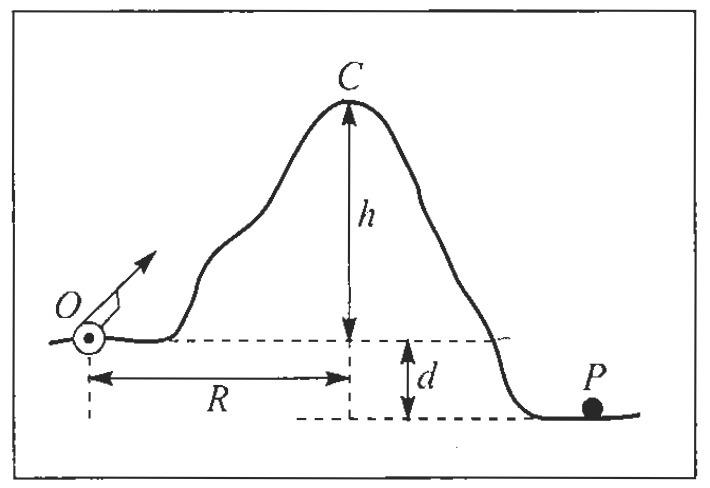Um projétil é lançado contra um anteparo vertical situado a 20m do ponto de lançamento. Despreze a resistência do ar. Se esse lançamento é feito com uma velocidade inicial de $20m/s$ numa direção que faz um ângulo de $60°$ com a horizontal, a altura aproximada do ponto onde o projétil se choca com o anteparo, em metros, é :
Dados: $tg 60°\approx 1,7; g=10m/s^2$ 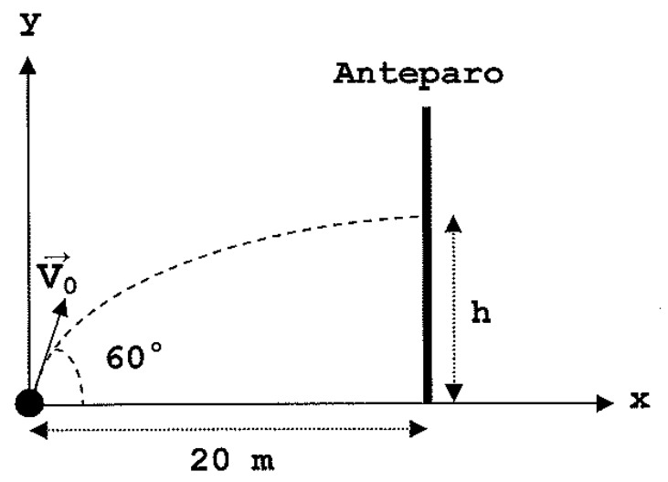
Uma curva semicircular horizontal numa estrada tem $30m$ de raio. Se o coeficiente de atrito estático entre os pneus e o asfalto é $0,6$, qual é a velocidade máxima(em Km/h) com que um carro pode fazer a curva sem derrapar?
A viga inclinada de $60°$ mostrada na figura repousa sobre dois apoios A e D. Nos pontos C e E, dois blocos de massa $8,0 kg$ estão pendurados por meio de um fio ideal. Uma força $\overrightarrow{F}=30,0 N$ traciona um fio ideal preso à viga no ponto B. Desprezando o peso da viga e o atrito no ponto D, a reação normal que o apoio D exerce na viga, em newtons é, igual a
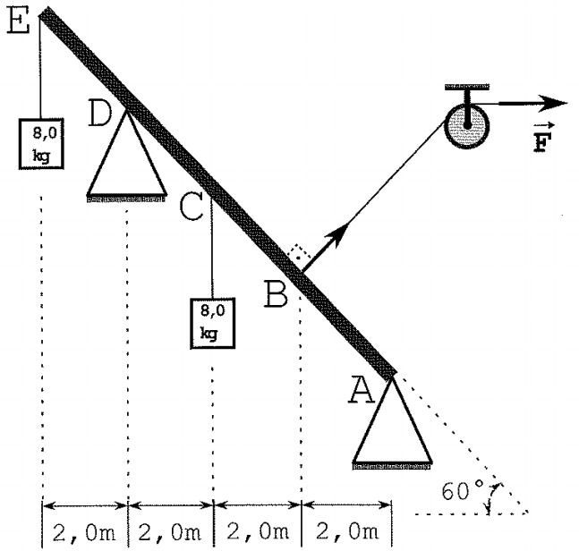Uma granada, que estava inicialmente com velocidade nula, explode, partindo-se em três pedaços. O primeiro pedaço, de massa $M_1=0,20 kg$, é projetado com uma velocidade de módulo igual a $10m/s$. O segundo pedaço, de massa $M_2=0,10kg$, é projetado em uma direção perpendicular à direção do primeiro pedaço, com uma velocidade de módulo igual a $15m/s$. Sabendo-se que o módulo da velocidade do terceiro pedaço é igual a $5,0 m/s$, a massa da granada, em kg, vale:
Para uma certa onda estacionária transversal em uma corda longa ao longo do eixo x, existe um antinó localizado em $x=0$ seguido de um nó em $x=0,10m$. A figura abaixo mostra o gráfico do deslocamento transversal, y, em função do tempo, da partícula da corda localizada em $x=0$. Das opções a seguir, qual fornece uma função $y(x)$, em metros, para a onda estacionária no instante $0,50s$?
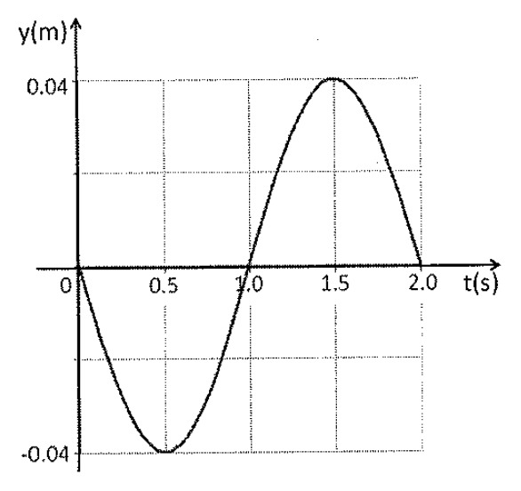Uma fonte sonora, emitindo um ruído de frequência $f= 450 \;Hz$, move-se em um círculo de raio igual a $50,0 \;cm$, com uma velocidade angular de $20,0 \;rad/s$. Considere o módulo da velocidade do som igual a $340 \;m/s$ em relação ao ar parado. A razão entre a menor e a maior frequência ($f_{menor}/f_{maior}$) percebida por um ouvinte posicionado a uma grande distância e, em repouso, em relação ao centro do círculo é:
Uma embarcação de massa total $m$ navega em água doce (rio) e também em água salgada (mar). Em certa viagem, uma carga foi removida da embarcação a fim de manter constante seu volume submerso, quando da mudança do meio líquido em que navegava. Considere $d_m$ e $d_r$ as densidades da água do mar e do rio, respectivamente. Qual a expressão matemática para a massa da carga removida e o sentido da navegação?
A figura abaixo representa um bloco em cima de um carro em um referencial acelerado com aceleração $\vec a$. Uma força $\vec F$, perpendicular à suberficie lateral do bloco, é aplicada na parte superio de um dos lados, conforme ilustrado. Sabendo que a razão entre a altura e a medida da base do bloco vale 2 e desconsiderando a resistência do ar e os atritos presentes no bloco, qual é a aceleração máxima que o carro pode atingir de forma que o bloco não se mova?
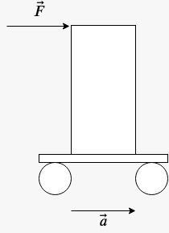Observe a figura a seguir.
Na figura acima, temos um disco de raio $R=0,1 \;m$ e espessura $R/3$ com um buraco circular de raio $R/4$. A distância entre o centro do disco o centro do buraco é $R/2$. A massa específica do material do disco é $\rho= 9,6 \times 10^3 \; kg\m^3$. Qual o módulo, em newtons, da força que, aplicada ao ponto A, garante o equilíbrio estático do disco na configuração representada acima?
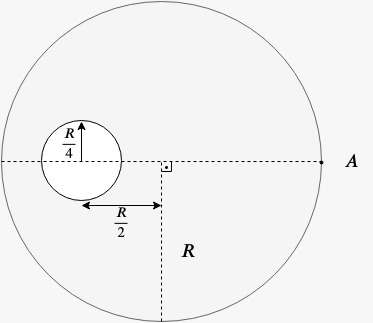Dados: $g=10\; m/s^2, \pi=3$
Analise a figura abaixo
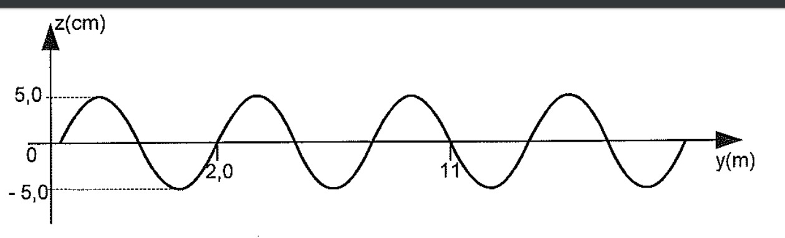A figura acima representa o perfil, num dado instante, de uma onda se propagando numa corda com velocidade de $15 \;m/s$ no sentido negativo do eixo y, sendo que os elementos inifinitesimais da corda oscilam na direção de z. Com base nos dados da figura, a função, $z(y,t)$, que pode descrever a propagação dessa onda é,
Duas fontes puntiformes localizadas em $P_1$ e $P_2$ emitem sons na mesma frequência. Calcule diferença de fase $\Delta \phi$ entre as ondas emitidas pelas fontes para que a onda que chega no ponto $P_3$ sofra interferência construtiva.
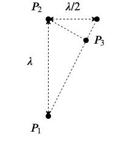Analise a figura abaixo.
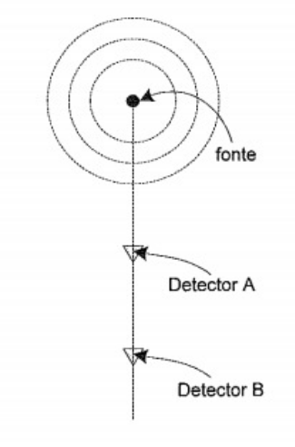Uma fonte sonora isotrópica emite ondas numa dada potência. Dois detectores fazem a medida da intensidade do som em decibéis. O detector A que está a uma distância de $2,0 \;m$ da fonte, mede 10dB e o detector B mede 5,0dB, conforme indica a figura acima. A distância, em metros, entre os detectores A e B, aproximadamente, vale:
Observe a figura abaixo.
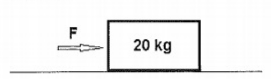Uma força constante $F$ de 200N atua sobre o corpo, mostrado na figura acima, deslocando-o por 10s sobre uma superfície, cujo coeficiente de atrito vale 0,2. Supondo que, inicialmente, o corpo encontrava-se em repouso, e considerando a gravidade local como sendo $10 \;m/s^2$, pode-se afirmar que o trabalho da força resultante, que atuou sobre o bloco, em joules, foi igual a:
Um raio de luz monocromático incide sobre a superfície de uma lâmina de vidro de faces paralelas, formando um ângulo $y$ com a normal, conforme a figura. Sabendo que o ângulo de refração na primeira face vale $x$ e que o raio de luz que incide na segunda face forma com esta um ângulo de 60°, determine o valor de $y$.
Admita:
Analise a figura a seguir.
Uma pessoa encontra-se parada em um ponto $P$, distante de um obstáculo e de uma fonte sonora que emite ondas conforme a configuração mostrada na figura acima. Um som emitido pela fonte no instante $t=0 \;s$ passa pelo ponto $P$ no instante $t_1=0,5 \; s$ e retorna ao ouvido da pessoa no instante $t_2 = 2,5 \;s$, após ter colidido com o obstáculo. Considerando a velocidade do som no ar como sendo constante e igual a $340\; m/s$, é correto afirmar que o comprimento de onda, a frequência da fonte emissora e a distância da pessoa até o obstáculo valem, respectivamente:
Um foguete foi lançado da superfície da Terra com uma velocidade $v=\displaystyle{\frac{2}{5}v_e}$, onde $v_e$ é a velocidade de escape do foguete. Sendo $R_T$, o raio da Terra, qual a altitude máxima alcançada pelo foguete?
Um bloco é lançado com velocidade $v_0$ no ponto $P$ paralelamente a uma rampa, conforme a figura. Ao escorregar sobre a rampa, esse bloco para na metade dela, devido a ação do atrito.
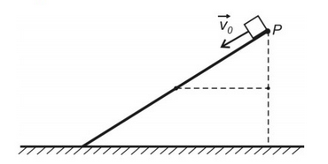Tratando o bloco como partícula e considerano o coeficiente de atrito entre a superfície do bloco e da rampa constante ao longo de toda a descida, a velocidade de lançamento para que este bloco pudesse chegar ao final da rampa deveria ser, no mínimo